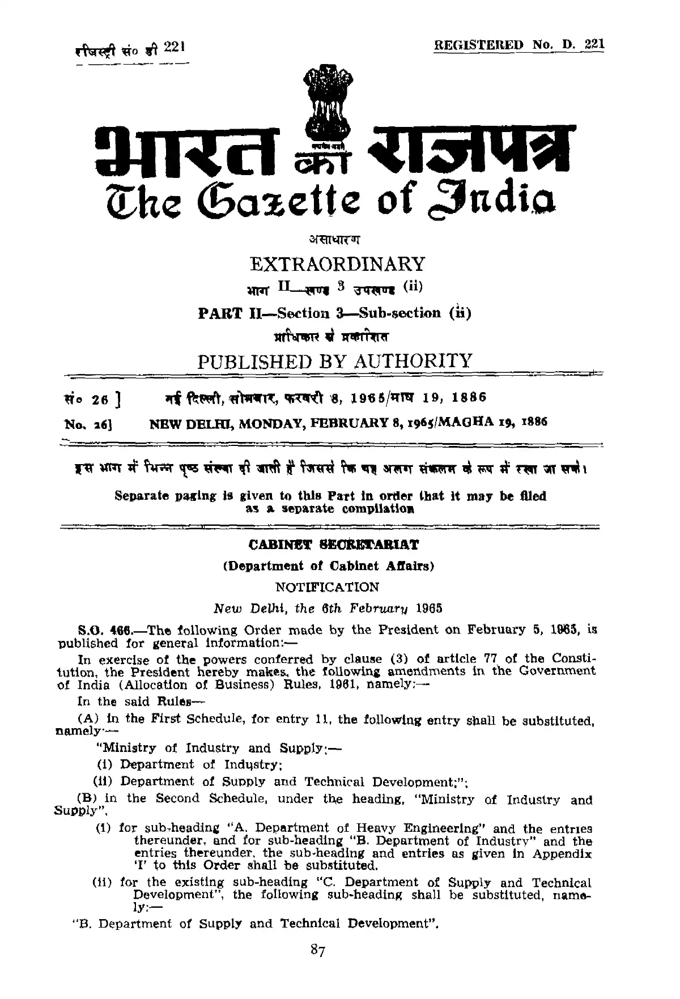
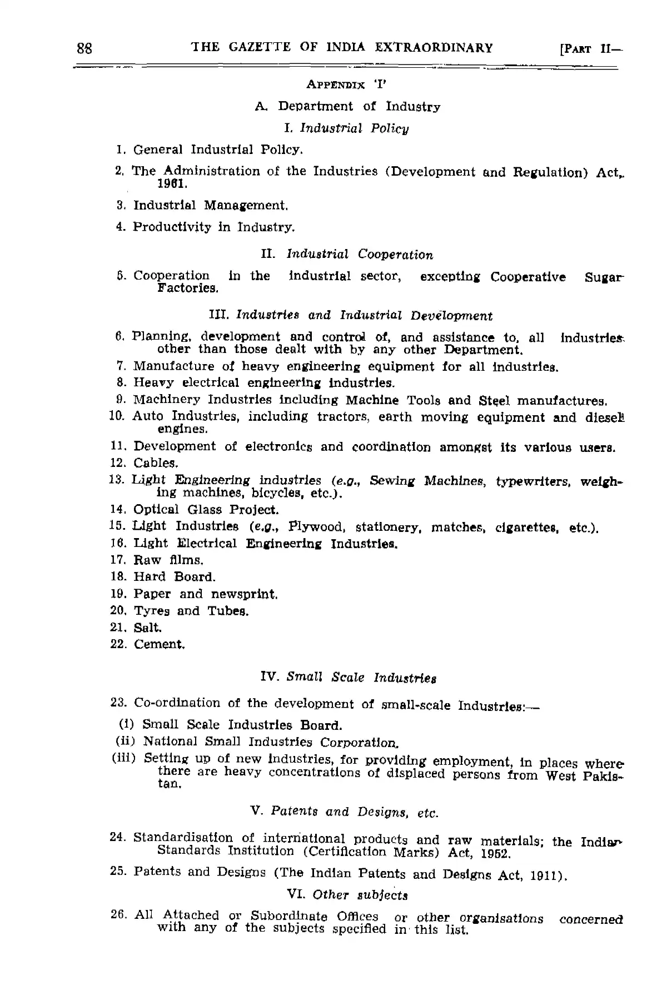
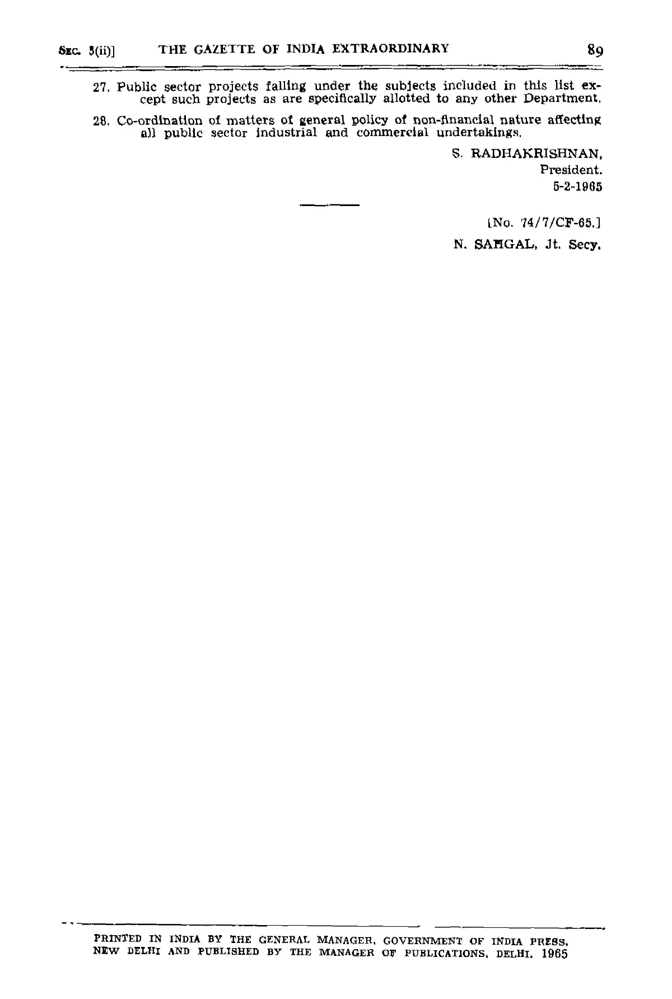

Amendment #37 (S.O. 466, 1965)
3 changes: 1 to the First Schedule, 2 to the Second Schedule. 3 applied
The order, page by page
Page 1 of 4

123Schedule 1 › entry 11
- Ministry of Industry and Supply :-
- i. Department of Industry: ( 11 ) Department of Supply and Technical Development
applied at schedule 1 › ministry 11 in the Rules after #37
states inferred number kept
Schedule 2 › Ministry of Industry and Supply › Department of Heavy Engineering; Schedule 2 › Ministry of Industry and Supply › Department of Industry
- A. Department of Industry
- I. Industrial Policy
- 1. General Industrial Policy.
- 2. The Administration of the Industries (Development and Regulation) Act,.
- 1961.
- 3. Industrial Management.
and 32 more
- 4. Productivity in Industry.
- II. Industrial Cooperation
- 5. Cooperation in the Industrial sector, excepting Cooperative Sugar Factories.
- III. Industries and Industrial Development
- 6. Planning, development and control of, and assistance to, all Industries. other than those dealt with by any other Department.
- 7. Manufacture of heavy engineering equipment for all industries.
- 8. Heavy electrical engineering industries.
- 9. Machinery Industries including Machine Tools and Steel manufactures.
- 10. Auto Industries, including tractors, earth moving equipment and diesel engines.
- 11. Development of electronics and coordination amongst its various users.
- 12. Cables.
- 13. Light Engineering industries (e.g., Sewing Machines, typewriters, weighing machines, bicycles, etc.).
- 14. Optical Glass Project.
- 15. Light Industries (e.g., Plywood, stationery, matches, cigarettes, etc.).
- 16. Light Electrical Engineering Industries.
- 17. Raw films.
- 18. Hard Board.
- 19. Paper and newsprint.
- 20. Tyres and Tubes.
- 21. Salt.
- 22. Cement.
- IV. Small Scale Industries
- 23. Co-ordination of the development of small-scale Industries:- (1) Small Scale Industries Board.
- ii. National Small Industries Corporation.
- iii. Setting up of new industries, for providing employment, in places where there are heavy concentrations of displaced persons from West Pakistan.
- V. Patents and Designs, etc.
- 24. Standardisation of international products and raw materials; the Indian Standards Institution (Certification Marks) Act, 1952.
- 25. Patents and Designs (The Indian Patents and Designs Act, 1911).
- VI. Other subjects
- 26. All Attached or Subordinate Offices or other organisations concerned with any of the subjects specified in this list. SEC. 5(ii)]
- 27. Public sector projects falling under the subjects included in this list except such projects as are specifically allotted to any other Department.
- 28. Co-ordination of matters of general policy of non-financial nature affecting all public sector industrial and commercial undertakings.
applied at schedule 2 › ministry MINISTRY OF INDUSTRY & SUPPLY › department A in the Rules after #37
read page break
Schedule 2 › Ministry of Industry and Supply › Department of Supply and Technical Development
- B. Department of Supply and Technical Development
applied at schedule 2 › ministry MINISTRY OF INDUSTRY & SUPPLY › department B in the Rules after #37
Page 2 of 4

Page 3 of 4

Page 4 of 4
How this document was read
Edits to the reading
| Date | By | Edit | Before → after |
|---|---|---|---|
| 12 November 2026 | claude | word corrected |
Changes placed by an inference rule
| Change | Rule | Status | What |
|---|---|---|---|
| 1 | number_kept | accepted | change 1: schedule 1 › ministry Ministry of Industry and Supply: keeps its number 11, the heading put for it quoted without one |
From the Government of India (Allocation of Business) Rules, 1961 and their amendments, as published by the Cabinet Secretariat (cabsec.gov.in), read by orgpedia. The readings of the older scanned gazettes have known gaps.